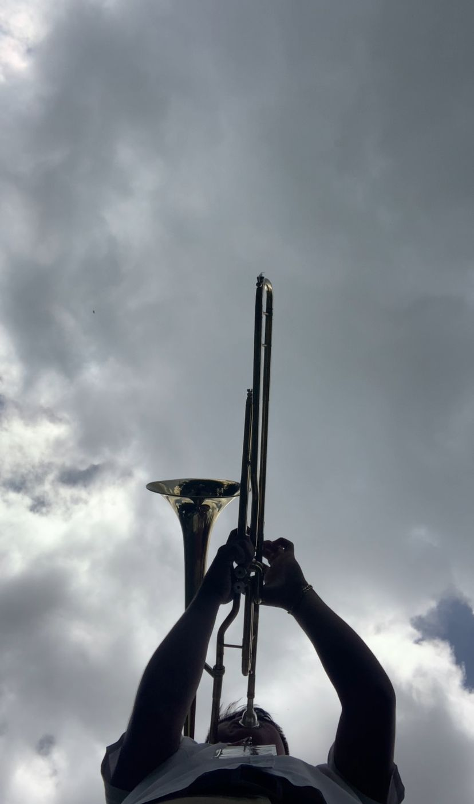
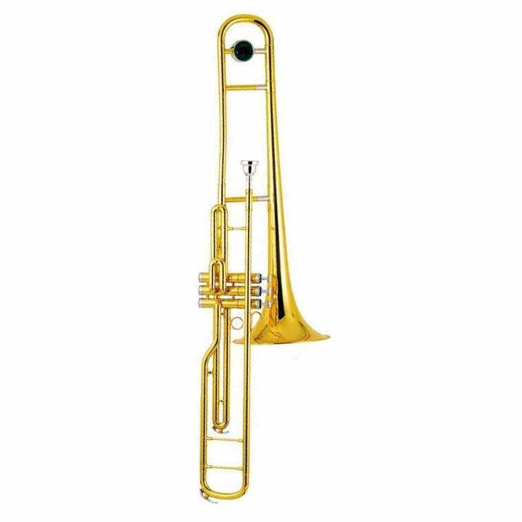

Características
- Pertenece a la familia de los instrumentos de viento-metal.
- Se toca mediante una boquilla y la vibración de los labios.
- La vara permite cambiar la longitud del tubo y así modificar las notas.
- Existen diferentes tipos: tenor, bajo y alto.
IMAGEN Y VIDEO

TROMBON TENOR
IMAGEN Y VIDEO
TROMBON DE EMBOLO
IMAGEN Y VIDEO

INSTRUMENTOS DE VIENTO
Los instrumentos musicales son objetos creados especialmente para producir sonidos organizados, es decir, música. Cada instrumento genera el sonido de una forma distinta: algunos vibran con cuerdas, otros con aire, con parches o incluso al ser golpeados o frotados.
Banda de instrumentos